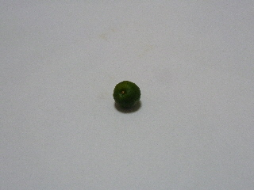
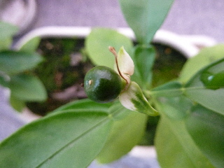
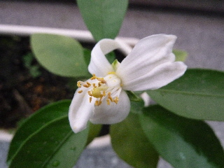
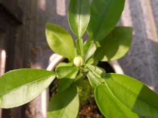
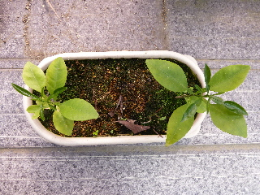

遊びで植物を育てよう
実生栽培で遊んでいます。
2013/06/25
グレープフルーツの実が落ちました。
グレープフルーツの実が落ちていました。
残念でした。

大きさは6mmです。
もうちょっと大きくなるかと思っていたんですが、あっけなく終わっちゃった。
また来年花が咲くといいな。
【ページTOP】
【グレープフルーツTOP】
【園芸TOP】
2013/06/15
グレープフルーツの実が出来ました。
花が終わった後ですが、小さな実が出来ていました。

この小さい木では大きくならないでしょうけど、実が出来たのはうれしいです。
どこまで育つかなー。
【ページTOP】
【グレープフルーツTOP】
【園芸TOP】
2013/05/28
グレープフルーツの花が咲きました。
無事に開花しました。

木が小さいからといって、小さい花ではないんですね。
ハッサクの花と同じくらいかな。
これが実になったら、重みで木が倒れちゃうな。
【ページTOP】
【グレープフルーツTOP】
【園芸TOP】
2013/05/18
グレープフルーツに花芽がついてる。
まだ2年目なのに、もう花芽がつきました。
こんなことってあるんですね。

ちょっとビックリしました。
こんな小さい木でも花が咲くんですね。
でもこの後いったいどうなるんでしょう？
【ページTOP】
【グレープフルーツTOP】
【園芸TOP】
2013/05/03
グレープフルーツはまだ小さいです。
そろそろ1年ですがまだ小さいです。

これくらい小さいと、地植えにしたら雑草にうもれちゃいますね。
もう1年このままこのプランターで育てたほうが良さそうです。
【ページTOP】
【グレープフルーツTOP】
【園芸TOP】
畑仕事じゃないよ。
【おいしいものを食べよう。】【しっかり寝よう。】
【ソロ活をしよう!】【季節感のあることをしよう。】【動画視聴はほどほどに。】【当サイトの全てのコンテンツは無断転載禁止です。】